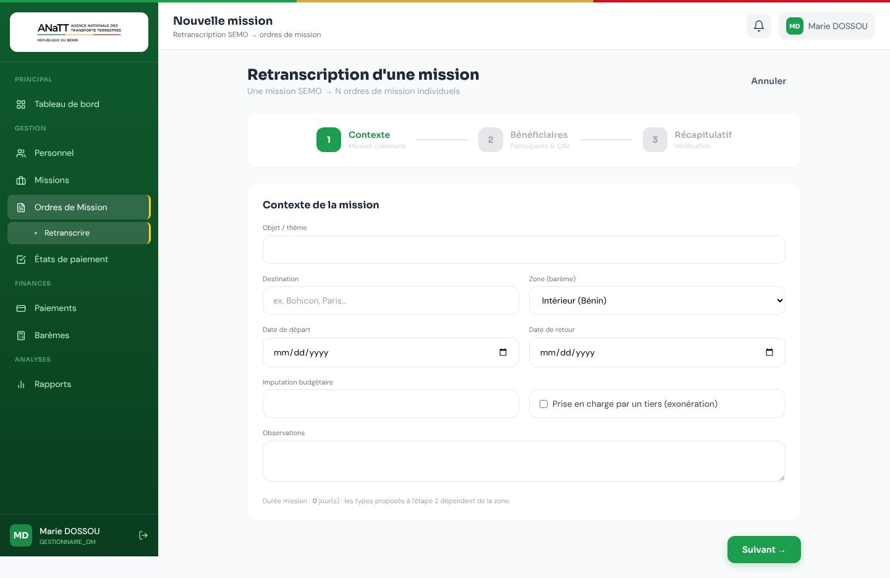

Galerie › Missions et ordres de mission
Retranscription d'une mission
Les OM ne sont pas créés : ils sont RETRANSCRITS depuis SEMO. Étape 1 : contexte de la mission ; la zone se déduit de la destination.

Les OM ne sont pas créés : ils sont RETRANSCRITS depuis SEMO. Étape 1 : contexte de la mission ; la zone se déduit de la destination.
